MYCOEIROINK — Additional Terms of Use
コンペキノソラ（セツ・ソラ）［Retake-2026］ / SYNTHESIZED SPEECH
These additional terms apply to the officially distributed MYCOEIROINK voice model. They supplement the existing Retake/UTAU Terms of Use without replacing the underlying character and creative-use rules.
1. Scope and precedence
These additional terms apply to the MYCOEIROINK voice model for “コンペキノソラ（セツ・ソラ）［Retake-2026］”, officially distributed by セツさん (Setsu), its accompanying files and synthesized audio. The base Retake Terms of Use also apply to character-related fan works and other shared matters.
For MYCOEIROINK-specific matters, these additional terms take precedence over conflicting provisions in the base terms. All use must also comply with the official COEIROINK Terms of Use.
2. Permitted use
You may use the official model through COEIROINK to generate, edit and publish speech for dialogue, narration, videos, games, parodies and other creative works. Ordinary audio editing such as mixing, EQ, volume, speed and pitch adjustment is permitted.
Personal and doujin monetization, including sales of creative works and video monetization, is generally permitted under the base terms. Corporate use, branded projects, advertisements and clearly commercial productions require prior permission from the creator.
R-18 and R-18G fictional content is permitted under the base terms, provided that appropriate age restrictions, content warnings and zoning are used and the COEIROINK Terms are followed.
3. Attribution — mandatory
When publishing synthesized audio, you must credit both “COEIROINK” and the name of the synthetic voice used, in the work or its description. Example: “COEIROINK:コンペキノソラ”. Use the exact voice name shown by the officially released model.
If an audio-only publication has no description field, provide spoken attribution or another form required by COEIROINK. When dubbing a different character, clearly identify which character uses this voice.
The optional-credit rule for the UTAU voicebank does not apply to MYCOEIROINK.
4. No impersonation or misleading real-person statements
Do not present generated speech as actual words, opinions, official statements, consent, instructions, private messages or communications made by the real voice provider/creator, セツさん (Setsu), or impersonate any other real person.
Clearly fictional character dialogue, parody and creative performance are not prohibited merely because the voice is used for acting.
5. No unauthorized redistribution or machine learning
Do not redistribute, sell, repackage or distribute conversions of the trained model, weights, raw recordings, training corpus or associated files without authorization. Direct others to the official distribution page.
Do not use the model or synthesized audio to train, fine-tune, transfer-learn or build datasets for another voice-cloning, speech, singing or voice-conversion model, including RVC, So-VITS, DiffSinger or ENUNU, without explicit permission.
Normal inference with the officially released MYCOEIROINK model through COEIROINK is permitted and is not considered prohibited retraining. Exceptions for the creator or individually authorized parties remain subject to the official COEIROINK Terms.
The archival-mirror exception in the UTAU base terms for an unreachable creator after three years does not apply to trained MYCOEIROINK model files.
6. Sharing outputs and engine restrictions
Finished videos, songs, games and other creative works may include the synthesized audio. However, you may not publish the generated audio as a freely reusable sound asset pack for unspecified third parties. When sharing audio with specific recipients, require them to comply with both these terms and COEIROINK’s official terms.
Do not directly run the model outside the COEIROINK engine. Integrations that use COEIROINK’s local API are permitted to the extent allowed by its official terms.
7. Other prohibited uses
Do not use the voice for real-world harassment, personal attacks, defamation, incitement of hatred or discrimination, fraud, rights violations, political propaganda or campaigning for/against a particular political, religious or ideological position. The base terms and official COEIROINK restrictions also apply. Merely including political elements or villains in fictional works is not prohibited.
8. Rights, revisions and contact
Distribution of this model does not transfer ownership of the voice, character or model to users. Users are responsible for respecting third-party intellectual property and other rights.
The creator may revise these terms when necessary. For questions or permissions, use the contact information provided in the base Terms of Use.